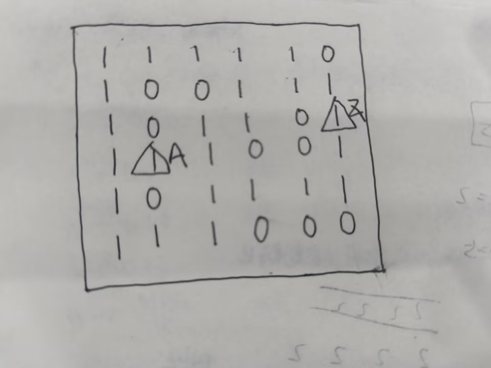
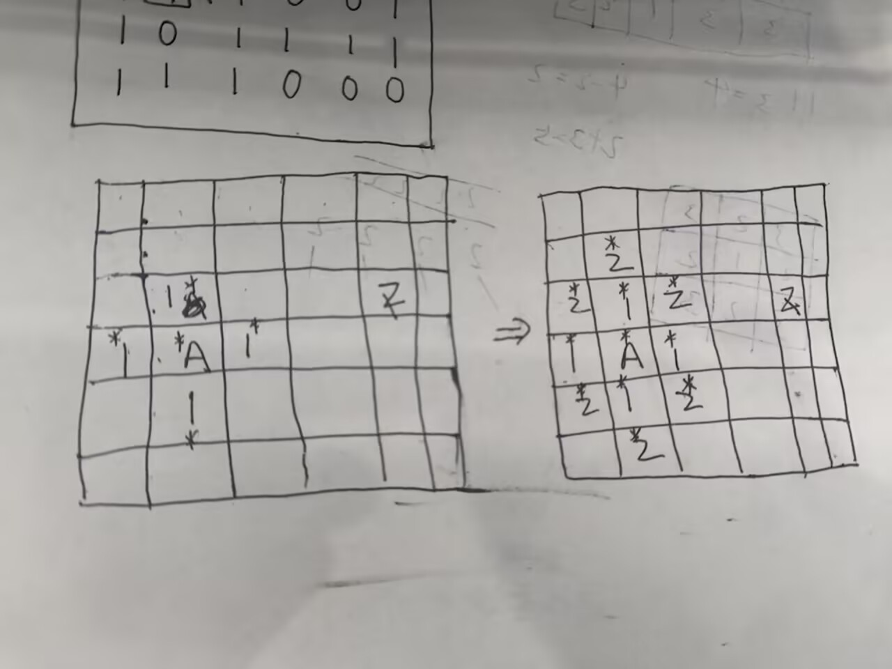

广度优先搜索：
说明一下广搜的原理：
广搜就是利用队列来一层一层的扩展，每次扩展一层，直到扩展到目标节点。
我们比如说有这样的一个图：（其中0为障碍物，1为可走路径）
如图：


如果说深搜是一条路走到黑，那么广搜就是一层一层地走。
广搜一般用于最少步数，最短距离，最少操作次数等问题。
广搜的是现实需要queue（队列）的。
我们先看一下广搜的实现：
我们可以先看一些广搜的模板：
图的可达性问题：
适用于：无权图、迷宫最短路、可达性判断等。
| 图的可达性问题.cpp | |
|---|---|
关键点： 1.入队时标记 vis，不要出队时才标记，否则会重复入队； 2.队列是先进先出，保证按层扩展； 3.vis 数组大小按点数开。
带步数的广搜（最短路）：
适用于：无权图、迷宫最短路、最短路径问题等。
| 带步数的广搜.cpp | |
|---|---|
dist[v] 就是 start 到 v 的最短步数，-1 表示不可达。
网格BFS模板：
是用于：二维网格、上下左右移动。
多源BFS模板：
适用于：多个起点同时扩散，求最近源点距离。
| 多源BFS.cpp | |
|---|---|
单源可达BFS模板：
| 单源可达BFS.cpp | |
|---|---|
bfs可以使用的特征是： 任意两个节点之间的相互距离相同（无向图）
bfs开始时，可以是单个源头、也可以是多个源头。
bfs频繁使用队列，形式可以是单点弹出或者整层弹出。
bfs进行时，需要标记访问过的节点，防止重复入队。
奇怪的电梯：
现在有一个奇怪的电梯，它只能向上或向下移动。而且第i层楼上有一个数字k，现在给你两个数字a和b，要求你从a楼出发，到b楼，输出最少需要按多少次按钮。
奇怪的电梯.cpp（BFS）
#include <bits/stdc++.h>
using namespace std;
const int N = 205;
int n , a , b;
int k[N];
int dis[N];
bool vis[N];
int main(){
ios::sync_with_stdio(0);
cin.tie(0);
cin >> n >> a >> b ;
for (int i = 1 ; i <= n ;i++){
cin >> k[i];
}
queue<int> q;
q.push(a);
vis[a] = 1;
dis[a] = 0;
while (!q.empty()){
int u = q.front();
q.pop();
if (u==b){
cout << dis[u];
return 0;
}
int up = u + k[u];
int down = u - k[u];
if(up <= n && !vis[up]){
vis[up] = 1;
dis[up] = dis[u] + 1;
q.push(up);
}
if (down >= 1 && !vis[down]){
vis[down] = 1;
dis[down] = dis[u] + 1;
q.push(down);
}
}
cout << -1 ;
return 0;
}
变形出发：
现在给你一个大小为n方形棋盘，棋盘上我们可以放置一些机甲，如果机甲相邻他们可以合体变成更强大的机甲。现在你需要计算出棋盘上一共有多少个机甲。
如果没有机甲，输出“完蛋了”，其他情况输出“(机甲数量)Autobots,roll out!”(汽车人出发)
变形出发.cpp（DFS）
#include<bits/stdc++.h>
using namespace std;
const int N = 1005;
int R, C;
char v[N][N];
bool vis[N][N];
int dx[4] = {0, 0, -1, 1};
int dy[4] = {1, -1, 0, 0};
void dfs(int x, int y){
vis[x][y] = true;
for (int d = 0; d < 4; d++){
int nx = x + dx[d];
int ny = y + dy[d];
if (nx >= 0 && nx < R && ny >= 0 && ny < C
&& !vis[nx][ny] && v[nx][ny] == '#'){
dfs(nx, ny);
}
}
}
int main(){
ios::sync_with_stdio(0);
cin.tie(0);
cin >> R >> C;
for (int i = 0; i < R; i++){
string s; cin >> s;
for (int j = 0; j < C; j++) v[i][j] = s[j];
}
for (int i = 0; i + 1 < R; i++){
for (int j = 0; j + 1 < C; j++){
int cnt = (v[i][j] == '#') + (v[i][j+1] == '#')
+ (v[i+1][j] == '#') + (v[i+1][j+1] == '#');
if (cnt == 3){
cout << "完蛋了\n";
return 0;
}
}
}
int res = 0;
for (int i = 0; i < R; i++){
for (int j = 0; j < C; j++){
if (v[i][j] == '#' && !vis[i][j]){
res++;
dfs(i, j);
}
}
}
cout << res << " Autobots,roll out!\n";
return 0;
}
💬
评论
不用注册，填个昵称就能说
评论加载中…